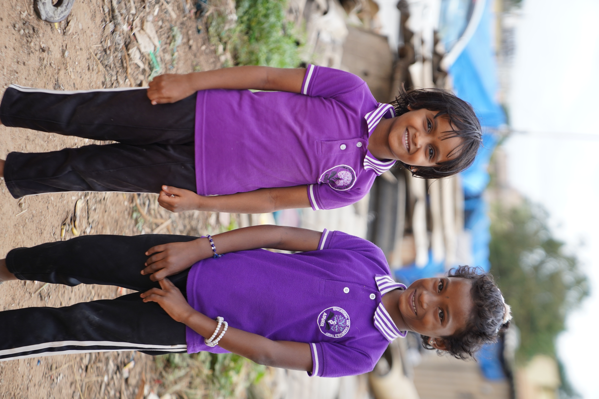
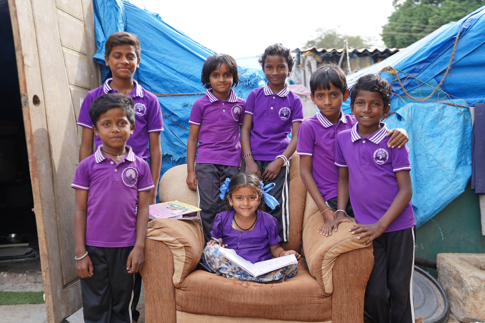
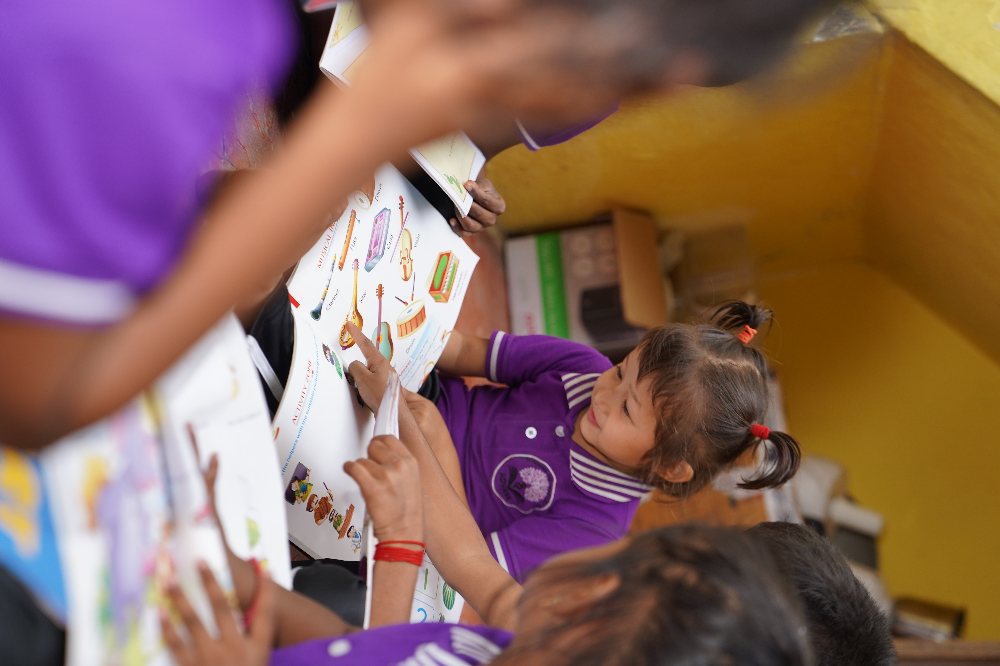
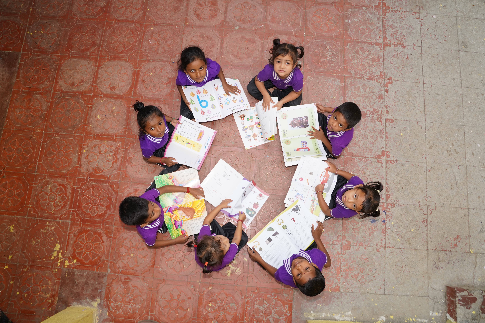
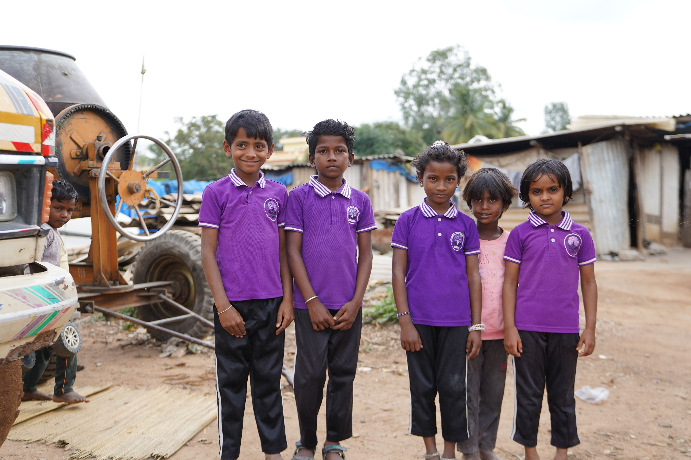

Bridging the gap for every child's right to learn and grow.
Education plays a transformative role in shaping individuals, families, and communities. However, for children living in makeshift settlements and on construction sites, access to education remains a distant dream. Despite the Right of Children to Free and Compulsory Education (RTE) Act, 2009, which guarantees free and compulsory education for children aged 6-14, migrant children continue to be excluded due to practical challenges.
Their education is disrupted due to:
At Advaya Educational and Charitable Trust, we firmly believe that education is the most powerful tool to break this cycle of poverty. The lack of access to education among migrant children is a violation of their fundamental right and severely impacts their future opportunities. Through our various education support programmes, we strive to reach out to the most marginalised children of India and enable their access to education, health and protection.
Along with quality education, we also facilitate sessions on basic education, alternative and values education, life skills and life goals, child rights, the effects of drug abuse, protection from sexual abuse, primary health care and nutrition. We provide children with school starter kits, which include uniforms, books, school bags, and other materials they may need to start their journey into education.

"The overarching goal is to ensure freedom for children from begging and that they are gradually weaned away from traffic signals and the mainstream in education."
Tailored programs addressing the unique challenges of migrant communities at every stage.
Advaya initiated the Day Care Programme primarily to support elder siblings who were burdened with the responsibility of caring for their younger brothers and sisters. In many of the families we serve, there is little awareness or capacity for family planning, and it is common to find households with four to five children.
As a result, the older children are often expected to take on adult responsibilities—cooking, cleaning, and babysitting—at the cost of their own education. This intervention not only provides a safe and nurturing space for the younger children but also enables the elder siblings to attend school regularly without the fear of being pulled out for caregiving duties.
The program ensures that both age groups have access to learning and development, thereby preventing school dropouts and supporting the holistic growth of the entire family. Designed for children aged 3-6 years, the program provides a nurturing environment where children can develop their cognitive, physical, social, and emotional skills.


The Bridge School Program at Advaya offers a vital second chance to children between the ages of 6 to 14 who have either dropped out or never enrolled in school. Many of these children face challenges such as language barriers, lack of documents, parental fear or hesitation, caregiving responsibilities for younger siblings, and seasonal migration—all of which keep them away from formal education.
To bridge this gap, we provide focused learning in core subjects like mathematics, science, languages, and social studies, along with personal and social development support. Learning is made joyful and engaging through activity-based methods, play, music, storytelling, and art, helping children develop a love for learning.
We also provide nutritious meals every day, ensuring that no child studies on an empty stomach. Our team works closely with families, offers emotional encouragement, and supports children with the documentation and confidence needed to enter formal schools. The Bridge School becomes not just a classroom—but a doorway to a brighter, healthier, and more dignified future.
.JPG)

The Advaya Evening Study Centre is a vital initiative that supports children who have transitioned from the Bridge School program into formal schools. These children, often the first in their families to attend school, face challenges in keeping up with classroom expectations due to gaps in foundational learning, lack of support at home, or language difficulties.
The Evening Study Centre provides a safe, structured, and encouraging environment where children receive individual attention, help with homework, concept clarification, and exam preparation. Learning is supported through interactive methods, regular assessments, and mentoring, which boost academic performance and confidence.
Many of these children come from homes where parents are unable to assist with studies due to work pressures or lack of education. The Study Centre helps bridge this gap, ensuring that children don't fall behind or drop out after school admission.


The Advaya Mobile School initiative was launched to bring education directly to children living in remote slum settlements and makeshift tent communities—areas where formal schooling is often out of reach. These children, many of whom are first-generation learners, face barriers such as migration, lack of documentation, and unstable living conditions, which prevent them from attending regular schools.
Recognizing this critical gap, Advaya designed the mobile school to reach children at their doorstep, making education accessible, inclusive, and relevant to their circumstances. Covering three slum clusters across Bangalore, the mobile school operates by setting up temporary classrooms in open spaces or community shelters, using creative teaching aids and learning materials.
Children are grouped based on learning levels rather than age, allowing for personalized instruction and meaningful progress. In addition to academic learning, the sessions incorporate health, hygiene, and life skills education to ensure holistic development. Over the years, 95 children from three slums were part of this initiative.


A glimpse into the transformation we are driving every day.
Children supported with school admission, tuition, and educational materials over the years
Children were bridged and admitted to various schools with support of Advaya.
Educational Kit Distributed
Girls empowered through education programs, personal care kits, and skill support.
Children currently enrolled and regularly attending classes under Advaya's education program.
Special children were supported with personalised care and inclusive educational support
Receiving remedial classes for foundational learning recovery
Parents engaged through awareness drives and meetings
Every contribution helps a child find their way back to school.